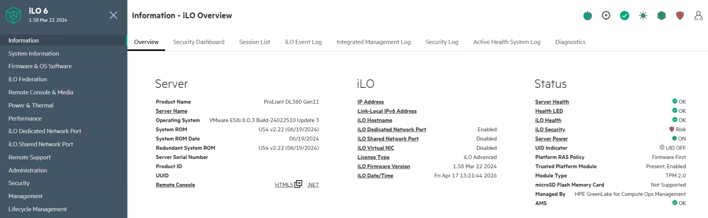

Objective
This check verifies that the server remote management interface (iDRAC, iLO, or equivalent) is accessible and operational. It confirms the availability of out-of-band access for hardware monitoring, troubleshooting, and recovery operations.
This is a verification-only control. No configuration or remediation is performed as part of this check.
Prerequisites
- Access to iDRAC / iLO
- Administrator permissions
- Stable network connection to the host management interface
Access Remote Management Interface
Open a browser and access the remote management interface using its IP address or FQDN.

Validate Connectivity and Status
After successful authentication, verify that the management interface loads correctly and that system information is displayed.
- Web interface loads successfully
- Authentication successful
- Server status visible
- No connectivity or certificate blocking issues

Result Interpretation
- ✅ OK – Remote access functional and management interface accessible
- ⚠️ WARNING – Access available but degraded or limited
- ❌ NOK – Remote management interface unreachable or inaccessible